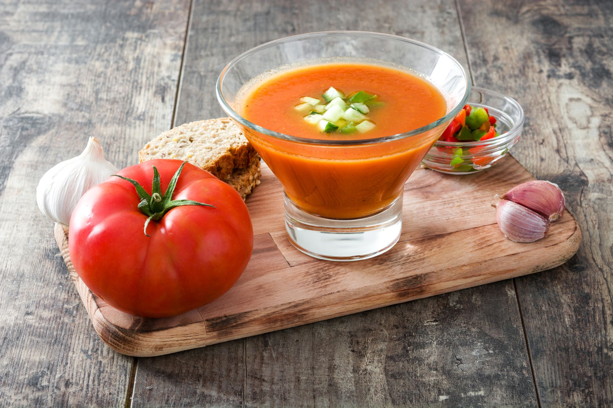

Gazpacho

Ingredientes:
- 1 kg de tomates maduros
- 1 pepino
- 1 pimiento verde
- 1 diente de ajo
- 50 g de pan duro
- 50 ml de aceite de oliva
- 20 ml de vinagre de jerez
- Sal
- Agua fría
- Para decorar: huevo duro picado, jamón serrano picado, pepino picado, pimiento picado y pan duro en cubitos.
Tiempos:
- Preparación:20 minutos
Pasos:
- Lavar los tomates, el pepino y el pimiento y cortar en trozos grandes.
- Pelar el diente de ajo y cortar en trozos.
- Poner todos los ingredientes en una batidora o robot de cocina y triturar hasta que estén bien mezclados.
- Añadir el pan duro y seguir triturando hasta que esté completamente integrado.
- Añadir el aceite de oliva, el vinagre y la sal al gusto. Mezclar bien.
- Añadir agua fría poco a poco hasta que se alcance la consistencia deseada.
- Refrigerar el gazpacho durante al menos 2 horas antes de servir.
- Servir frío y decorar con huevo duro picado, jamón serrano picado, pepino picado, pimiento picado y cubitos de pan duro.